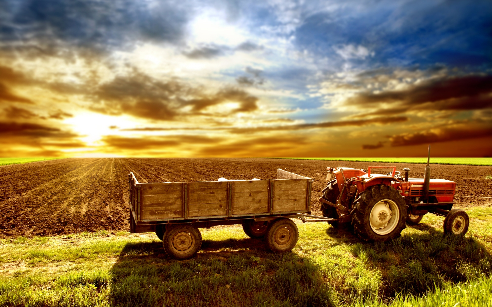
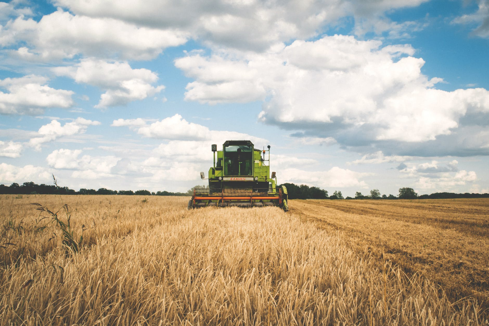

A farmer (also called an agriculturer) is a person engaged in agriculture, raising living organisms for food or raw materials. The term usually applies to people who do some combination of raising field crops, orchards, vineyards, poultry, or other livestock. A farmer might own the farmed land or might work as a laborer on land owned by others, but in advanced economies, a farmer is usually a farm owner, while employees of the farm are known as farm workers, or farmhands. However, in the not so distant past, a farmer was a person who promotes or improves the growth of (a plant, crop, etc.) by labor and attention, land or crops or raises animals (as livestock or fish).
Farming dates back as far as the Neolithic, being one of the defining characteristics of that era. By the Bronze Age, the Sumerians had an agriculture specialized labor force by 5000–4000 BCE, and heavily depended on irrigation to grow crops. They relied on three-person teams when harvesting in the spring.[2] The Ancient Egypt farmers farmed and relied and irrigated their water from the Nile. Animal husbandry, the practice of rearing animals specifically for farming purposes, has existed for thousands of years. Dogs were domesticated in East Asia about 15,000 years ago. Goats and sheep were domesticated around 8000 BCE in Asia. Swine or pigs were domesticated by 7000 BCE in the Middle East and China. The earliest evidence of horse domestication dates to around 4000 BCE.
Nowadays there is a huge increment in the crop failure because of reasons like adverse climatic conditions, poor farming practices, pests and disease and human activities. Due to which people face consequences like rise in the food prices, starvation, failure of Agro-based industries and crippling of economy.In this project our main aim is to target the farmers and the suppliers to overcome crop failures by giving them suggestions for good farming methods such as the application of fertilizers and pesticides. This will also help the agriculturist to improve their livelihoods through increased in agricultural productivity and income, or by reducing risks.
A Web application to help farmers ensure great profitability through direct farmer to supplier and farmer to farmer communication. This service boosts business communication and brings transparency in the system. This innovative site allows for good farmer, retailer and supplier communication. It allows farmers to login and communicate to respective dealers. When dealers publish an advertisement or offer, the respective farmers get notified via SMS message. The farmers may also submit their grievances and complaints to respective dealers or authorities using their farmer login on a separate complaints page and authorities will get access to that page regularly using their login id and passwords.